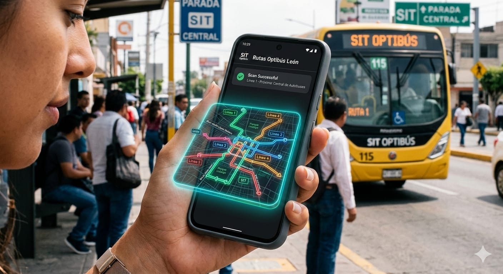
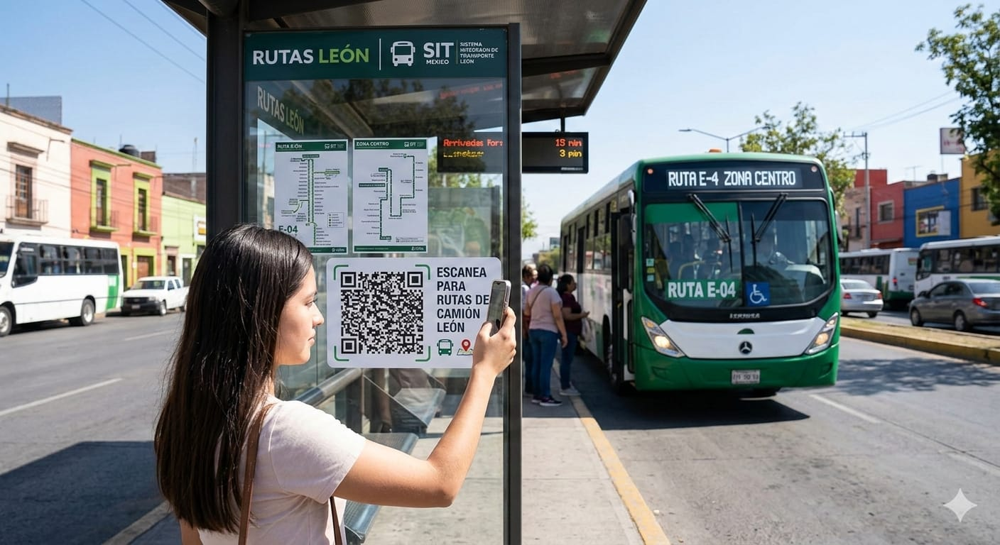
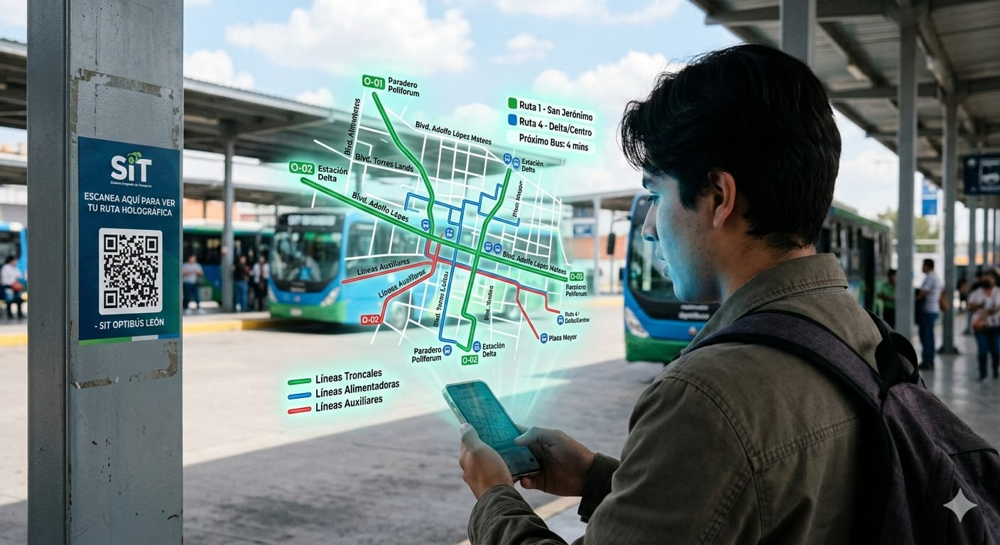
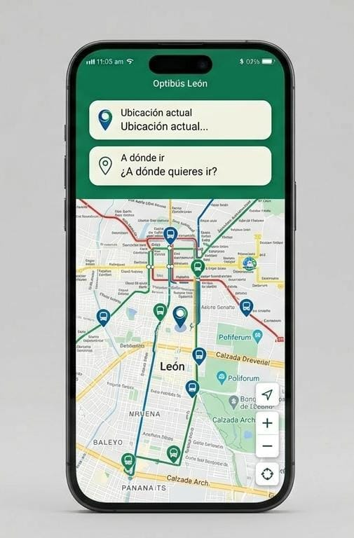

Innovación en transporte público mediante una aplicación de Realidad Aumentada.
Conoce el proyectoMoverse en el transporte público de una ciudad en constante crecimiento suele ser un reto diario. Los usuarios se enfrentan frecuentemente a:

Aprovechando tecnologías accesibles, buscamos transformar la parada de autobús en un punto de información interactivo sin requerir inversiones millonarias.

Integración de códigos QR en las paradas de autobús para acceder a una interfaz con información de rutas y horarios.

Módulo de realidad aumentada que muestra modelos 3D de las rutas para facilitar la comprensión visual del recorrido en tu entorno.

Sistema de seguimiento en tiempo real que permite a los usuarios conocer la ubicación exacta del autobús en cualquier momento.
Implementar el uso de la Realidad Aumentada para aumentar la certeza de los usuarios a la hora de trasladarse en el transporte público, dentro de la ciudad de León, Guanajuato en un 50%.
Reducimos la incertidumbre del pasajero y sentamos las bases para una infraestructura de movilidad urbana más inteligente, participativa y económicamente sustentable.